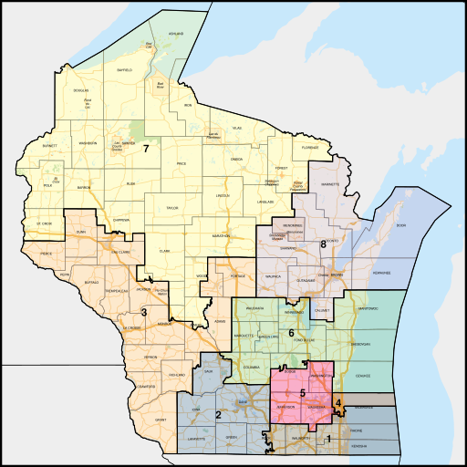

State of Wisconsin Elected Officials
Our governor and senators serve the entire state. Wisconsin also holds 8 seats in the US House of Representatives.
- Tony Evers, Governor
- Tammy Baldwin, Senator
- Ron Johnson, Senator
- Bryan Steil, District 1 Representative
- Mark Pocan, District 2 Representative
- Derrick Van Ordern, District 3 Representative
- Gwen Moore, District 4 Representative
- Scott Fitzgerald, District 5 Representative
- Glenn Grothman, District 6 Representative
- Thomas Tiffany, District 7 Representative
- (Vacant) District 8 Representative

Almost there! Click Here for the final stop on our tour!
Home